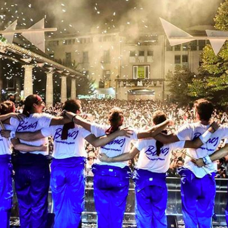

I'm a Catalan boy from a small town called Santa Eulalia de Ronçana. Friend of my friends and in love with my family. Currently I'm studing business administration at ESADE and doing an Erasmus at HEC Paris and psychology at UOC. I'm great passionate for music that dedicates as many hours as he can to experiment with instruments. Saxophonist in the bands Yellow Street Corner and The bróquil is over among others, guitarist during my free time, percussionist for the group TakaTakaChombo and singer (with room for improvement) in the shower. I do not know how to fly or dance, but sometimes I try. I also like sports whenever there is a ball involved. And if I still have spare time I like to write. My notebook let me express myself and does not charge me 80 euros per session.
My relationship with music started when I was only 5 years old. My parents decided to inscribe me to classes of harmony, musical language and choral singing at the school.From that moment, little by little, I started discovering a new world that fascinated me more and more. And this passion for music has not stopped growing so far, and music has become a basic pillar of my life, an escape valve that allows me to disconnect from the monotonous routine, much more than just a hobby. And that is why I couldn't agree more with Friedrich Nietzsche when he assures that without music life would be a mistake or with Ilyich Tchaikovsky when he says that if it weren't for music, there would be more reasons to go crazy.
At present, I am still considered a saxophonist. Alto saxophone was the first instrument I started to play when I was 6 years old and I accompanied him with the soprano saxophone and the tenor saxophone at the age of 18.
To the saxophone I added the guitar which I started learning to play on my account about 2017 and, since I did not have it enough, in 2018 I signed up to piano lessons. Finally, in early 2020 I started studying drums with the aim of creating a percusion band with recicled instruments together with some friends.
Listen to my music!The sport of my life has been tennis. I started playing tennis with 7 years and I kept going to classes and competing nationwide until 15. At 15 I decided to try some different sport and I aimed at handball since it is a very important sport in the area where I live. The handball, however, did not convince me and I quit the team the following year.
Nowadays and since 3 yars ago I have been playing in a university football league together with a group of friends. We are not likely to be a candidate team to win the Champions League, but we have a lot of fun playing together and it is the excuse we have to meet each week.
Affter finishing my high school at Escola Pia Granollers, I started my studies in business administration at ESADE in Sant Cugat del Vallès, a city next to Barcelona. During the fourth year of my bachellor I went to France at HEC Paris to spend there 5 months thanks to the european Erasmus program. Parallel to my business studies, in 2019 I started studying online psychology at the Open University of Catalonia.